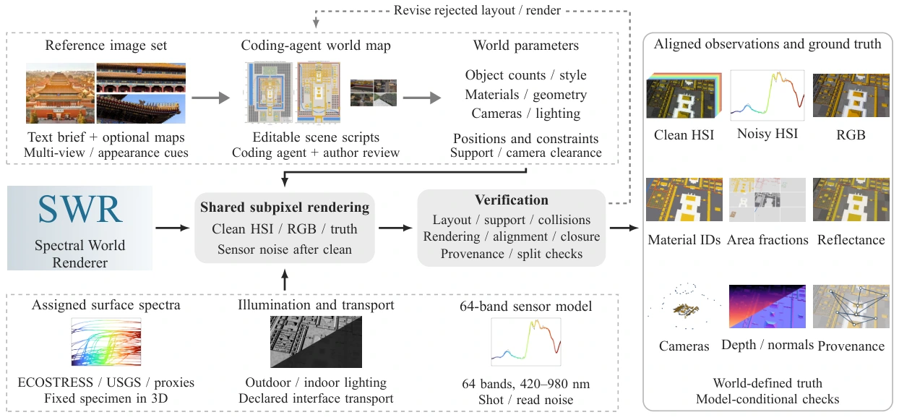
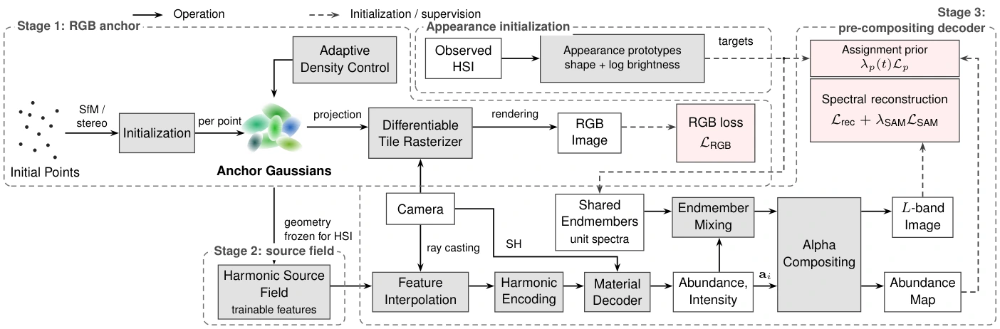
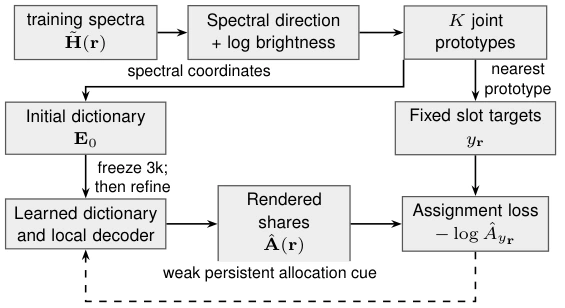
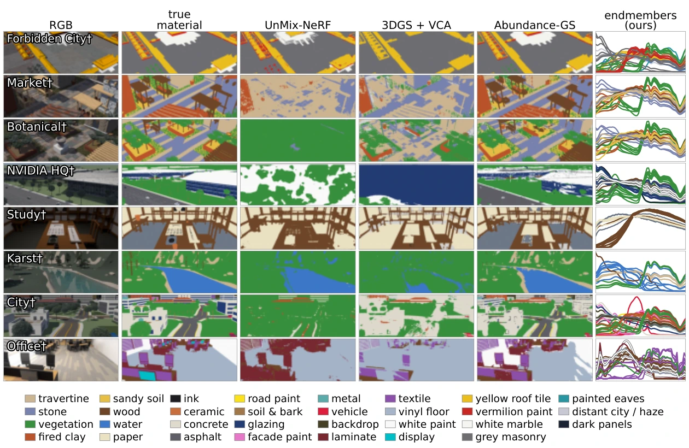
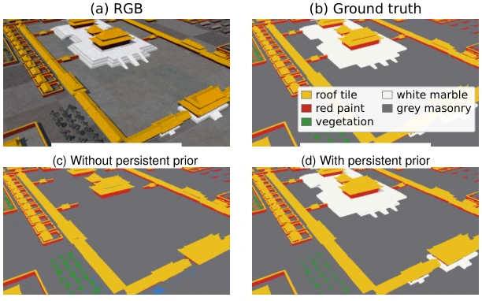
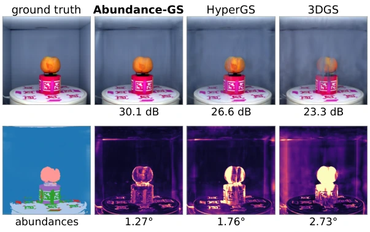

Author the world
Specify structure, objects, material families, lighting and camera paths in executable code.
HYPERSPECTRAL WORLDS · 3D MATERIAL ANALYSIS
1 University at Albany, SUNY2 National Yang Ming Chiao Tung University3 National Cheng Kung University
From executable worlds to spectra and materials.
Eight indoor and outdoor scenes. Aligned observations. Queryable 3D decomposition.
Geometry and semantics describe a scene. Spectra provide evidence of its materials.
Hyperspectral imaging offers material-specific spectral evidence, but acquisition cost, limited composition annotations and expensive multi-view unmixing make scene-scale analysis difficult. Spectral World Renderer couples verifiable hyperspectral simulation with efficient 3D material decomposition.
A coding agent translates reference images and text into executable scene programs. Measured material spectra and shared rendering samples produce aligned hyperspectral observations, material labels and subpixel material proportions. Abundance-GS learns a shared spectral dictionary and local mixture field in a compact Gaussian representation, with an appearance-guided prior that helps retain initially distinct assignments.
The two components allow us to evaluate spectral reconstruction and material decomposition together—and reveal when faithful spectra hide incorrect material assignments.
SWR-BENCH
Architecture, vegetation, infrastructure and indoor materials at scene scale.
Switch scenes to explore RGB, individual spectral bands and separate material layers.
Press play to watch. Downloads use the original-quality file.
Separate material-share maps on the same fixed 0–1 scale, with RGB for reference. These are model shares, not physical area fractions. An asterisk marks a class without an assigned endmember.
Videos render the existing Abundance-GS models along continuous camera paths. Material layers use native 30 fps views; the HSI band comparison uses the same native 30 fps paths. Overview and RGB retain their original camera paths. RGB uses visible bands near 630 / 550 / 460 nm; HSI bands shows individual wavelengths near 456 / 553 / 633 / 651 / 802 nm at a shared exposure. The overview retains the original near-infrared false-colour composite. Display exposure is fixed within each scene.
Choose a scene and a baseline to compare its material predictions with ours and ground truth at the same evaluation camera.
Loading comparison…
SPECTRAL WORLD RENDERER
Scene programs make geometry, material assignment, illumination and cameras explicit.

Specify structure, objects, material families, lighting and camera paths in executable code.
Assign measured spectra and jointly sample radiance, material identities and subpixel proportions.
Check support, collisions, camera coverage and observation–label alignment.
ABUNDANCE-GS
Compact RGB geometry anchors a spatial mixture field and shared spectral dictionary.

Joint spectral shape and brightness prototypes initialize the dictionary. A weak, persistent assignment prior regularizes allocation throughout optimization, without material supervision.
Learned mixture coefficients are evaluated against physical composition separately; they are not assumed to equal surface coverage.

A faithful spectral image does not by itself establish a correct material decomposition.


At matched K = 32 in Forbidden City, retaining the prior recovers white-marble assignments. Closely related spectra and low-support materials remain challenging.

Real captures test spectral fidelity and representation efficiency beyond the simulated worlds.
Compact geometry and a shared dictionary reduce the cost of learning and querying spectral appearance.
Reference City pipelines; includes startup and loading, excludes shared preparation and testing.
Explore the rendered worlds and supplementary material.
Complete results, NHT analysis and additional views.
↗MP4Watch or download each scene in four representations.
↓@misc{lee2026spectralworldrenderer,
title = {Spectral World Renderer: Towards Verifiable 3D Hyperspectral Unmixing},
author = {Chia-Ming Lee and Yu-Jou Hsiao and Ming-Ching Chang and Xin Li
and Yu-Lun Liu and Chih-Chung Hsu},
year = {2026}
}